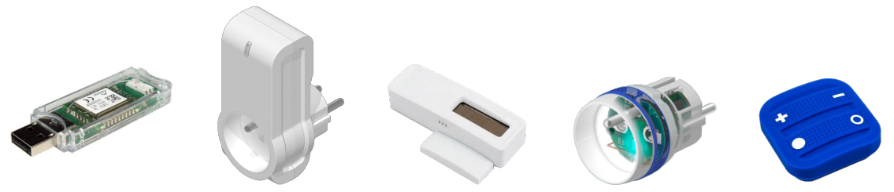
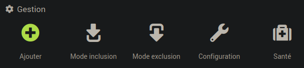

Objectifs pédagogiques
L'objectif principal de ce sujet de travaux pratiques est de découvrir la technologie domotique sans‑fil EnOcean et la box Jeedom, par la mise en place d'un petit réseau domotique WPAN (cf. cours, chap. R3‑V ).
Pour traiter ces exercices, il est recommandé d'avoir étudié les chapitres R3‑IV et R3‑V du cours. Des renvois aux principaux éléments de cours ou à des pages web d'information générale sont donnés au fur et à mesure des questions.
Mise en situation
Environnement
Les manipulations demandées sont à accomplir sur un réseau local (LAN) utilisant la pile de protocole TCP/IP, raccordé à l'Internet, de préférence sans serveur proxy pédagogique. En effet, un tel serveur pose des problèmes d'accès à divers composants logiciels de l'application Jeedom.
Équipement
Les manipulations demandées requièrent le matériel listé ci‑dessous.
- Pour jouer le rôle de box domotique Jeedom, on emploie un nano‑ordinateur Raspberry Pi 3 ou Pi 4 :
- avec une carte MicroSD sur laquelle est éventuellement déjà installé un système d'exploitation de type Raspberry Pi OS 64 bits lite (sans bureau) ;
- dont l'adresse IP est connue, pour pouvoir s'y connecter avec un poste de travail sur le même réseau. On rappelle qu'en cas de configuration DHCP, il est utile de connaître préalablement l'adresse MAC de la carte pour pouvoir déterminer son adresse IP en scannant le réseau.
- On utilise poste de travail (typiquement, un PC) comme terminal de commande pour l'installation du système et du logiciel de la box, puis son utilisation via un navigateur web.
- Autour de la box, on met en œuvre ensemble d'équipements domotiques certifiés EnOcean : 
- un contrôleur‑passerelle USB300DC O2Line – il s'agit d'un dongle USB émetteur‑récepteur EnOcean 868 MHz) à brancher sur la carte Raspberry Pi ;
- une prise électrique commandable smart plug NodOn ;
- un capteur d'ouverture door/window sensor NodOn ;
- une prise électrique commandable micro smart plug NodOn ;
- une télécommande 4 boutons soft remote NodOn .
Travail demandé
Effectuer toutes les manipulations demandées en veillant au respect des consignes, dans l'ordre, sans oublier d'étape. En cas de doute sur un branchement ou une manipulation, ne pas hésiter à solliciter l'enseignant. Au fur et à mesure, penser à sauvegarder les modifications.
- Préparation du réseau et du nano‑ordinateur
- Raccorder le poste de travail à la box FAI via le switch. Laisser son interface réseau en DHCP mais supprimer tout recours à un serveur mandataire (proxy server).
- Si la carte Raspberry Pi dispose pas d'une carte MicroSD avec le système d'exploitation Raspberry Pi OS recommandé supra, procéder à l'installation de ce système sur la carte – cf. la procédure donnée dans le sujet de TP R2‑2 .
- Monter la carte MicroSD sur la carte Raspberry Pi, raccorder cette dernière au switch puis la mettre sous tension et attendre le chargement complet du système avant d'ouvrir une connexion distante
sshdepuis le poste de travail. - Procéder au paramétrage du système d'exploitation – cf. la procédure donnée dans le sujet de TP R2‑2 :
- réglage de la date,
- réglage des paramètres régionaux,
- mise à jour du système et redémarrage,
- Installation et paramétrage du logiciel de box domotique
- Toujours en connexion distante
sshdepuis le poste de travail, installer l'application Jeedom en suivant les indications du cours, chap. R3‑V . - Via un navigateur sur le poste de travail, se connecter à la box Jeedom en saisissant son adresse IP comme URL. Utiliser les identifiants par défaut (
admin/admin). - Changer le mot de passe avec celui indiqué par votre enseignant. Avec identifiant associé, le noter dans un fichier pour le retrouver en cas d'oubli ultérieur.
- Appeler l'enseignant pour la connexion au compte Jeedom Market.
- Installation des équipements domotiques
- Via le menu Outils, déclarer les objets
Maison,Rez‑de‑chaussée,Cuisine,Placard,Escalier,Étage,Chambre, avec les liens de parentés pour prendre en compte le fait que : - la chambre est à l'étage,
- les autres pièces sont au rez‑de‑chaussée,
- et le placard est dans la cuisine.
- Mettre en place le contrôleur‑passerelle EnOcean en suivant les étapes décrites ci‑dessous.
- Via le menu Plugin/Gestion des plugins/Market, installer le plugin EnOcean (il est déjà payé avec le compte Market sélectionné par l'enseignant). Ouvrir la page web de paramétrage du plugin via le lien proposé par l'application.
- Brancher le contrôleur‑passerelle USB300DC sur un port USB 2.O de la carte Raspberry Pi. Normalement, sa led verte doit s'allumer et rester fixe.
- Dans la page web de paramétrage du plugin EnOcean (openenocean) - stable :
- dans l'encart
État, cliquer sur le boutonActiver; d'autres encart – notammentConfiguration– doivent alors apparaître ; - dans l'encart
Configuration, sélectionner pour le port EnOcean celui qui est spécifiquement reconnu par le système, typiquement :
EnOcean_GmbH EnOcean_USB_300_DC (/dev/tty/USB0)
puis cliquer sur le bouton 🗸Sauvegarder ; - dans l'encart
Dépendances, seulement si le statut est NOK, cliquer sur le bouton Relancer (cette opération peut prendre plusieurs minutes) ; - dans l'encart
Démon, vérifier que laconfigurationet lestatutsont tous les deux OK ; - si seul le
statutest NOK, cliquer sur le bouton(Re)Démarrer▶ ; - si la
configurationest NOK, vérifier que la configuration est conforme et sauvegardée comme demandé supra ; si tel est le cas, relancer l'installation des dépendances. - Inclure les équipements domotiques dans le réseau EnOcean.
- via le menu Plugin / Gestion des plugins / Protocoles domotiques, sélectionner la page web d'utilisation du protocole EnOcean. 
- L'inclusion dans le WPAN EnOcean d'un équipement compatible obéit au processus décrit ci‑dessous pour une prise électrique commandable.
- Brancher la prise électrique commandable smart plug dans une prise murale et vérifier préalablement que son bouton lumineux ON/OFF est opérationnel. Sur cette prise, brancher une veilleuse fournie avec son capteur de luminosité obturé (pour qu'elle s'allume en permanence si elle est alimentée).
- Dans la page web du protocole EnOcean, cliquer sur le bouton
Mode Inclusion. - Appuyer alors au moins 2 secondes sur le bouton lumineux ON/OFF de la prise. Ce dernier doit alors devenir rouge fixe puis clignoter en vert trois fois avant de reprendre son état initial.
- La page page web du protocole EnOcean doit alors réagir et faire apparaître une vignette de la prise dans la rubrique Mes équipements EnOcean.
- Cliquer sur cette vignette pour paramétrer l'équipement. Le nommer
prise lumière, l'associer à l'objet parentPlacardet à la catégorieLumière. Cocher les casesActiveretVisible, pour que l'équipement soit représenté par un widget dans le Dashboard. Cliquer sur le bouton 🗸Sauvegarder. - Recommencer la même procédure pour les autres équipements listés dans la section Mise en situation supra , sachant que :
- le capteur d'ouverture est à associer à l'objet
placard(lui attribuer le nomcapteur porte) et à la catégorieLumière; - la deuxième prise commandée et la télécommande sont à associer à l'objet
Maisonet à la catégorieChauffage. - consulter son mode d'emploi pour identifier le bouton sur lequel appuyer lors de la procédure d'inclusion.
- vérifier les différentes commandes compte tenu du type d'équipement.
- Codage de scénarios de commande
- Découverte du Dashboard.
- Dans le menu Accueil/Dashboard, passer en mode édition (bouton « stylo » à droite), répartir et agrandir suffisamment les widgets qui représentent chaque équipement pour pouvoir visualiser l'intégralité de leur contenu.
- Vérifier que l'équipement
prise lumièrerépond bien aux commandes on/off en cliquant sur son icôneÉtat. - Vérifier que l'icône associé à l'état de l'équipement
capteur porteest conforme à l'éloignement de l'aimant par rapport au corps du capteur. - Grâce à un premier scénario de fonctionnement, on souhaite utiliser l'équipement
prise lumièrepour commander l'éclairage du placard afin qu'il s'allume automatiquement lorsque la porte est ouverte (comme dans un réfrigérateur) – état détecté par l'équipementcapteur porte. - Dans le menu Outils/Scénarios, ajouter un nouveau scénario :
- l'associer au groupe
Éclairageet à l'objetPlacardet cocher la caseVisiblepour qu'il apparaisse dans leDashboard; - choisir son mode de déclenchement
Provoquépar un événement lié au changement d'état ducapteur porte(cliquer sur le boutonChoisir une commande…) ; - cliquer sur le bouton Ajouter bloc pour programmer le scénario sous la forme d'une condition logique
SI/ALORS/SINON(cliquer sur les boutons contextuels et choisir les expressions proposées conformément à la spécification supra) ; - cliquer sur le bouton Exécuter puis vérifier le bon fonctionnement du scénario en approchant et éloignant l'aimant du capteur d'ouverture (le wall plug doit respectivement s'éteindre et s'allumer).
- cliquer sur le bouton 🗸Sauvegarder.
- Revenir à la page du
dashboardet vérifier que le scénario dispose d'un widget. Observer le déroulement du scénario, puis l'effet de son activation ou désactivation. - Grâce à un deuxième scénario de fonctionnement, on souhaite commander un ventilateur branché sur une prise commandée en fonctionnement intermittent.
- Dans un contexte réel, on adopterait par exemple une mise en marche de 5 minutes toutes les heures. Mais dans le cadre de cet exercice, pour faciliter la vérification du bon déroulement du scénario, on paramétrera un fonctionnement d'1 minute toutes les 2 minutes.
- On conditionnera également la mise en marche au fait que le bouton nº 1 de la télécommande est appuyé (appui bistable). En cas d'appui (signal au niveau haut), le ventilateur doit se mettre immédiatement en marche intermittente. En cas de nouvel appui (signal au niveau bas), le ventilateur doit s'arrêter immédiatement et ne plus se remettre en marche tant que le bouton n'est pas appuyé à nouveau
- Cliquer sur le bouton Programmation et choisir un mode
récurrenttoutes les 5 minutes, puis remplacer la valeur5par2dans le champ de programmation – codé avec une syntaxe Linux cron W. - Cliquer sur le bouton Déclencheur pour définir l'élément déclencheur selon le même principe qu'au scénario précédent.

Gestion automatique, c'est‑à‑dire avec le bouton 🗙Désactiver visible. On, Etat, Off, Etat et vérifier que la prise répond correctement à ces commandes. Les deux, c'est‑à‑dire un scénario programmé et déclenché. DANS qui permet de commander une action différée.